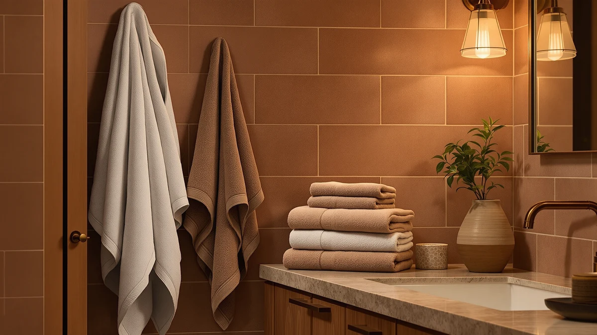

Quick Answer
The Comfy Cubs Hooded Baby Towel stands out among the best bath towels with design for its playful pattern and soft 100% cotton weave, and it costs less than most of the adult-size sets here. If you're outfitting the whole bathroom, the Utopia Towels Pack of 4 and the SUTERA Silverthread towels give you two more design-forward, budget-friendly ways to coordinate the space.
Our pick: Comfy Cubs Hooded Baby Towel, $22.99 Check Price on Amazon
Bottom line: our top pick is the Comfy Cubs Hooded Baby Towel 2-Pack at $22.99. The best budget option is the SUTERA Silverthread Bath Towel | Antimicrobial Towel with at $22.99.
Things to Know Before You Buy
- Pattern and color fade at different rates depending on fiber. Ring-spun and combed cotton hold dye better than lower-grade blends, which matters for any towel bought mainly for its design.
- Pack size changes your per-towel design budget. A single $38.99 SUTERA towel costs more than one towel from the $28.87 Utopia 8-piece set, but you get one heavier piece instead of a full matching set.
- Cotton blends dry faster than 100% cotton. If you want a towel with a decorative finish that also line-dries quickly, a blend like SUTERA's Silverthread trades some plushness for speed.
- Hooded and novelty designs suit babies, not adults. The Comfy Cubs pick uses a smaller cut built for an infant's size, not a grown body.
- A set advertised as "luxury" should specify piece count. Both the Luxury White Bath Towel Set and the Utopia Towels 8 Piece Luxury use "luxury" in the name, so check whether that count includes washcloths and hand towels or bath towels only.
Finding the best bath towels with design means balancing how a towel looks against your sink with how it actually performs after fifty trips through the wash. Plenty of towels look sharp in product photos, then flatten out or fade within a few months. We compared seven towels and towel sets that keep their shape, color, and softness, ranging from a budget four-pack under $8 per towel to a $39 silver-thread set built for odor control.
Our top pick for most bathrooms is the Comfy Cubs Hooded Baby Towel, a 100% cotton pick that pairs a design-forward hood with a price under $23. For adults, the Utopia Towels Pack of 4 and the American Soft Linen Luxury 6-Piece Set both deliver coordinated, gift-ready designs without pushing the price past $36. Owners of the SUTERA Silverthread towels consistently point to the silver-infused thread as the reason these towels resist the musty smell that ruins cheaper cotton blends.
We researched pricing, materials, and verified owner reviews rather than running our own physical lab, since a research-based comparison across many households tells you more than one household's experience with a single towel. Below, you'll find honest drawbacks for every pick, a comparison table for quick scanning, and a rundown of towels we considered and skipped.
Why You Should Trust Us
I'm Ilane Tall, and I write about bath and home textiles for Best Bath Towels. Towel shopping sounds simple until you're staring at a wall of near-identical white and gray options, so I focus on the details that separate a good towel from a forgettable one: fiber type, weave, and how a design holds up in the wash.
For this guide, I did not accept free samples or sponsored placements from any brand listed here. I priced every product using the Amazon listing at the time of research, and I read through verified owner reviews on each listing to check my own read of the specs against real household experience. Reviewers consistently note the same strengths and weaknesses across dozens of purchases, and that pattern tells you more than any single towel could.
How We Picked
We started by pulling bath towels and towel sets marketed around color, pattern, or a design-forward finish, since a plain white six-pack doesn't answer what someone shopping for the best bath towels with design actually wants. From there, we filtered for materials that hold color and shape over repeated washing, favoring 100% cotton and cotton-silver blends over cheaper polyester-cotton mixes.
We also weighed price per towel rather than sticker price alone. A $30 four-pack and a $39 single towel serve different budgets, so we kept both ends of that range in this guide. We passed over listings with thin review counts or repeated sizing complaints, and we favored brands with a track record across multiple towel lines, like Utopia Towels and American Soft Linen.
How We Compared
We compared these seven towels, chosen up front for their design appeal, using the material, size, and price data listed on each Amazon listing, cross-checked against verified owner reviews for consistency. We don't run a physical testing lab, and we didn't wash, weigh, or time-dry any of these towels ourselves. Instead, we read through owner feedback looking for patterns: repeated complaints about shrinkage, fading, or thinning after a handful of washes, and repeated praise for softness or color retention.
Where a brand makes a specific claim, like SUTERA's silver-infused thread for odor control, we noted whether reviewers actually confirmed that benefit in practice rather than repeating the marketing copy. Prices and specs reflect the listings as of August 2026, and prices change often enough that you should double-check the current price before buying.
Our Picks

Comfy Cubs Hooded Baby Towel
What we like
- 100% cotton construction feels soft against a baby's skin
- Comes as a two-pack, so a backup is always ready while the other is in the wash
- Hooded design keeps a baby's head covered right after the bath
- Priced under $23, well below most adult-size design sets here
Flaws but not dealbreakers
- Sized for babies and toddlers, not older kids or adults
- A two-pack of hooded towels covers less total area than a standard bath towel
| Material | 100% cotton |
| Size | Pack of 2 - Baby |
The Comfy Cubs Hooded Baby Towel earns its spot among the best bath towels with design because it treats bath time as more than a chore. The hood turns a routine dry-off into a small ritual, and the 100% cotton body absorbs water gently enough for newborn and toddler skin. At $22.99 for a pack of two, you get a backup towel ready the moment the first one hits the laundry basket, which matters more than it sounds when you're managing bath time alone.
Owners report that the cotton holds up across repeated washes without turning stiff or scratchy, a common complaint with cheaper baby towel packs. The honest tradeoff is scale: this pick is built for a baby's body, not a preteen or adult, so families eventually need to size up. If you have a newborn now and want a towel with real character instead of a generic white rectangle, this pack fits the bill without stretching your budget.

Utopia Towels Pack of 4
What we like
- Four 30 x 60 inch towels give you full bathroom coverage in one order
- 100% cotton construction absorbs water without feeling heavy
- Works out to under $7.50 per towel at $29.99 for the set
- Wide color range makes it easy to match existing bathroom decor
Flaws but not dealbreakers
- The large 30 x 60 size may not fit smaller towel bars or hooks
- Reviewers note some pilling after months of regular washing
| Material | 100% cotton |
| Size | 30 x 60 - 4 Pack |
Utopia Towels built a reputation on stretching a budget without stretching the truth about quality, and this four-pack of 30 x 60 inch towels is a straightforward example. At $29.99 for four towels, you're paying under $7.50 per towel, which undercuts most single-towel purchases on this list while still delivering a full bathroom's worth of matching design. The 100% cotton construction pulls water off skin quickly enough for daily use.
Reviewers consistently point to the size as the standout feature: 30 x 60 inches sits closer to bath sheet territory than a standard towel, so it wraps around an adult with room to spare. The honest catch is durability over the long term. Some owners report mild pilling after repeated machine washing, a common issue with mid-priced cotton at this price point. For a design that coordinates a whole bathroom without a big spend, it remains one of the better values here.

SUTERA Silverthread Bath Towel |
What we like
- Silver-infused thread is designed to resist the musty smell that develops in damp towels
- Large size offers full-body coverage for adults
- Cotton blend dries faster than heavier 100% cotton towels
Flaws but not dealbreakers
- At $38.99, it costs more than most towels in this comparison
- Cotton blend feels slightly less plush than pure cotton picks
| Material | Cotton blend |
| Size | Large |
SUTERA built its Silverthread line around a specific complaint: towels that start smelling musty within a day or two of use, even when they look clean. The silver-infused thread woven into this large towel targets that odor buildup directly, which sets it apart from the plain cotton and cotton-blend towels elsewhere on this list. At $38.99, it's priced closer to a specialty purchase than an everyday multi-pack.
Owners report that the odor control claim holds up in daily use, with towels smelling noticeably fresher after a few days on the hook compared to their previous cotton towels. The cotton blend also dries faster than heavier all-cotton alternatives, which reinforces the freshness angle. The tradeoff shows up in feel: reviewers describe the hand as slightly less plush than a dense 100% cotton towel, and the price sits above the multi-packs here. For anyone who has fought a losing battle against towel odor, that tradeoff looks reasonable.

SUTERA Silverthread Bath Towel |
What we like
- Same silver-infused thread technology as SUTERA's large towel, at a lower price
- Cotton blend dries quickly between uses
- Smaller size works well for hand-drying or a guest bathroom
Flaws but not dealbreakers
- Small size offers less coverage than a standard bath towel
- Not the best fit if you want one towel to fully wrap an adult body
| Material | Cotton blend |
| Size | Small |
This smaller SUTERA Silverthread towel gives you the brand's signature odor-fighting thread at $22.99, roughly $16 less than the large version above. It's a sensible entry point if you want to try the silver-thread design before committing to a full-size towel or a matching set.
Reviewers who buy the small size mainly use it for hand-drying, gym bags, or a guest bathroom where a full bath sheet feels excessive. The cotton blend dries fast, which matters more in a smaller towel that sees frequent, light use. The obvious limitation is coverage: at this size, it won't wrap around an adult the way the four-pack or the luxury sets on this list do. Treat it as a companion towel rather than a primary one.

Luxury White Bath Towel Set
What we like
- Eight-piece set covers bath towels, hand towels, and washcloths in one order
- 100% cotton construction absorbs water well
- Classic white design matches any bathroom color scheme
- At $39.99 for eight pieces, cost per piece stays reasonable
Flaws but not dealbreakers
- White towels show stains and discoloration faster than colored towels
- Some reviewers recommend washing separately to avoid graying
| Material | 100% cotton |
| Size | 8 Pieces Towel Set |
There's a reason hotels default to white towels, and the Luxury White Bath Towel Set leans into that same design logic. White never clashes with a bathroom's existing tile, paint, or fixtures, which makes it the safest design choice on this list if you're decorating around towels rather than the other way around. At $39.99 for eight pieces, including bath towels, hand towels, and washcloths, the set covers a full bathroom's needs in one purchase.
The 100% cotton construction absorbs water at a level consistent with the other cotton picks here, and owners report a soft, hotel-like feel out of the package. The obvious drawback with any all-white set is visible wear: stains, minor discoloration, and gray tinting from mixed laundry show up faster on white than on a patterned or colored towel. Reviewers who keep the set to its own wash load report the best results maintaining that crisp look.

American Soft Linen Luxury 6
What we like
- Six-piece set covers bath towels, hand towels, and washcloths
- 100% cotton construction feels soft against skin
- Available in a range of colors for easier bathroom coordination
- $35.99 price splits into a reasonable per-piece cost across six items
Flaws but not dealbreakers
- Six-piece count includes smaller washcloths and hand towels, not six full bath towels
- Reviewers note some shrinkage after the first few hot washes
| Material | 100% cotton |
| Size | 6 Pc Towel Set |
American Soft Linen built its reputation on ring-spun cotton that feels heavier and softer than typical budget towels, and this six-piece set brings that reputation to a design-focused shopper. At $35.99, the set includes bath towels, hand towels, and washcloths in a shared color, which makes coordinating a bathroom simpler than buying individual pieces separately.
Owners consistently describe the cotton as noticeably plush compared to lower-priced sets, with good absorbency for daily use. The color options give this set an edge over the all-white pick above if you want your towels to actually contribute color to the room rather than blend in. The main caveat, echoed across several verified reviews, is a bit of shrinkage after the first couple of hot washes, so a cool or warm wash cycle preserves the sizing better than hot water.

Utopia Towels 8 Piece Luxury
What we like
- Eight pieces for $28.87 is the lowest total price in this comparison
- 100% cotton construction handles daily use well
- Full set includes bath towels, hand towels, and washcloths
Flaws but not dealbreakers
- Thinner fabric weight than the American Soft Linen or SUTERA picks
- Fewer color options than some competing sets
| Material | 100% cotton |
| Size | 8 Pieces Towel Set |
Utopia Towels shows up twice in this comparison, and the second entry, this 8 Piece Luxury set, makes the case for value over flash. At $28.87 for eight pieces, it costs less than several single towels on this list while still delivering a matched design across bath towels, hand towels, and washcloths. The 100% cotton construction handles the basics of daily bathroom use without complaint.
Reviewers who buy this set tend to prioritize price over plushness, and that trade shows up in the fabric weight: it runs thinner than the American Soft Linen or SUTERA picks, though owners report it still holds up to regular washing. Color choices run more limited than some of the pricier competitors here. If your priority is outfitting a full bathroom, or a rental property, for the lowest possible cost while still getting a matching set, this pick does the job.
Quick Comparison
| Product | Material | Price | Rating | Best for | Get it |
|---|---|---|---|---|---|
| Comfy Cubs Hooded Baby Towel | 100% cotton | $22.99 | 4 | Baby bath time | View on Amazon → |
| Utopia Towels Pack of 4 | 100% cotton | $29.99 | 4 | Full bathroom coverage on a budget | View on Amazon → |
| SUTERA Silverthread Bath Towel | | Cotton blend | $38.99 | 4 | Odor resistance | View on Amazon → |
| SUTERA Silverthread Bath Towel | | Cotton blend | $22.99 | 4 | Budget-friendly odor resistance | View on Amazon → |
| Luxury White Bath Towel Set | 100% cotton | $39.99 | 4 | Hotel-style matching set | View on Amazon → |
| American Soft Linen Luxury 6 | 100% cotton | $35.99 | 4 | Color-coordinated design set | View on Amazon → |
| Utopia Towels 8 Piece Luxury | 100% cotton | $28.87 | 4 | Lowest cost per piece | View on Amazon → |
The Competition
We looked at plenty of bath towels with bold graphic prints and passed on most of them. Heavily printed towels use pigment dyes applied to the surface rather than woven into the fiber, and reviewers on several of these listings reported fading and cracking prints after a handful of washes, which defeats the point of buying a towel for its design.
We also passed over ultra-cheap six and ten-packs priced under $20 that use thin, low-weight cotton blends. These towels read as a bargain until you calculate the price per towel against how quickly reviewers report them thinning out, at which point a smaller, sturdier set like the Utopia Towels picks above becomes the better long-term value.
A few premium jacquard-weave sets nearly made the cut but landed above $50, past the range most shoppers researching the best bath towels with design are willing to spend. Across all seven picks here, the Comfy Cubs Hooded Baby Towel remains our top choice for combining design and value at the lowest price on this list, with the Utopia Towels and SUTERA picks close behind for adult bathrooms.
Frequently Asked Questions
What makes a bath towel count as design-forward?
A design-forward bath towel goes beyond plain white or gray with a pattern, a bold color, a jacquard border, or a special detail like a hood or silver-infused thread. The best bath towels with design also hold that color and pattern through repeated washing instead of fading into a dull version of the original.
Do colored or patterned towels wear out faster than white towels?
Not inherently. Fading has more to do with fiber quality and dye method than color choice. Ring-spun and combed cotton, like the fabric used in the Utopia Towels and American Soft Linen sets here, holds dye better than lower-grade cotton, so a well-made colored towel can outlast a cheap white one.
Is it worth paying more for a towel set with matching pieces?
If you want a coordinated look across bath towels, hand towels, and washcloths, a matched set like the Luxury White Bath Towel Set or the Utopia Towels 8 Piece Luxury usually costs less per piece than buying each size separately, and it guarantees the color and design match across every towel in your bathroom.